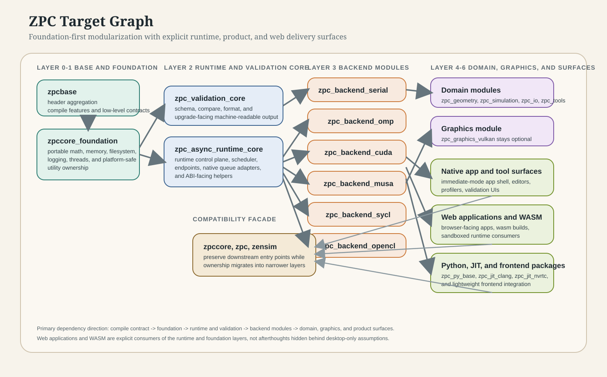
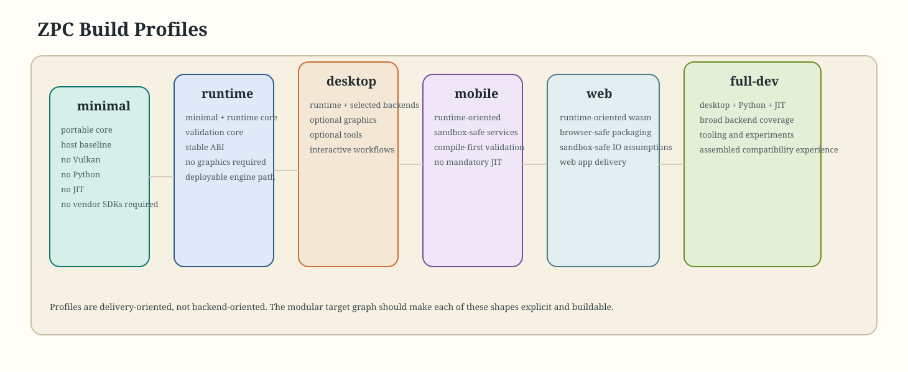

Overview
overview.mdHigh-level project context and the current architecture direction.
A lightweight documentation entry point for the current architecture work. This page is standalone HTML for easy browsing in the editor or file explorer, while the primary design content now lives in the Markdown pages beside it.
Start Here
High-level project context and the current architecture direction.
Topic-oriented contents page with summaries and suggested reading paths.
Strategic direction, delivery phases, and platform priorities.
Platform Architecture
The portable, always-on substrate that future layers should depend on.
Async control-plane direction, executor model, scheduler scope, and validation coupling.
Target graph proposal, dependency direction, and compatibility-facade strategy.
Delivery-oriented build profiles for minimal, runtime, desktop, mobile, web, and console-entry paths.
Milestone sequence for foundation extraction, backend separation, and graphics split.
Product And Application Research
Application-shell and lightweight frontend direction above the modular platform.
Optional graphics ownership, visualization paths, inspection tooling, and presentation layers.
Simulation-facing structures, heterogeneous execution concerns, and validation-aware delivery.
Higher-level interaction logic, authoring systems, scripting, and native or web app consumers.
A high-level view of the intended dependency direction from base contracts up to compatibility facades.

A compact map showing how the project scales from a portable minimal profile up to a full development assembly.
